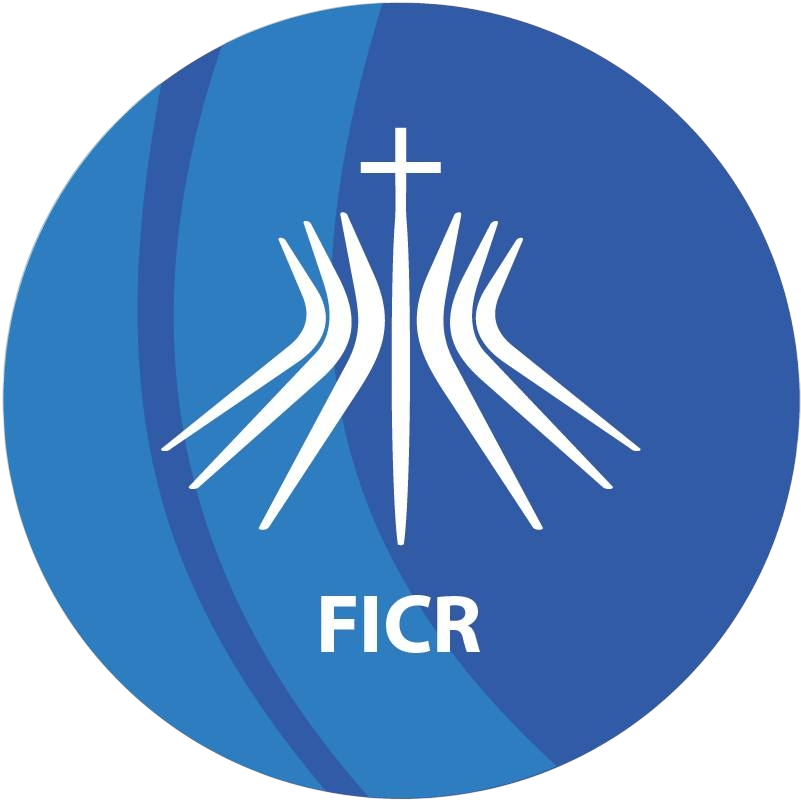

FORMAÇÃO ACADÊMICA
Graduanda em Sistemas de Informação
Universidade Federal de Pernambuco
07/2025 - 07/2028
Noturno

Análise e Desenvolvimento de Sistemas
Faculdade Imaculada Conceição do Recife
03/2023 - 07/2025
Noturno
Técnica de Edificações
Instituto Federal de Educação de Pernambuco
02/2019 - 12/2022
Aprendi processos da construção civil, produção e leitura de plantas arquitetônicas.